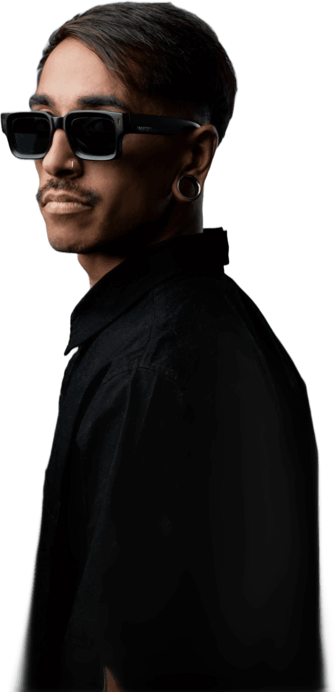
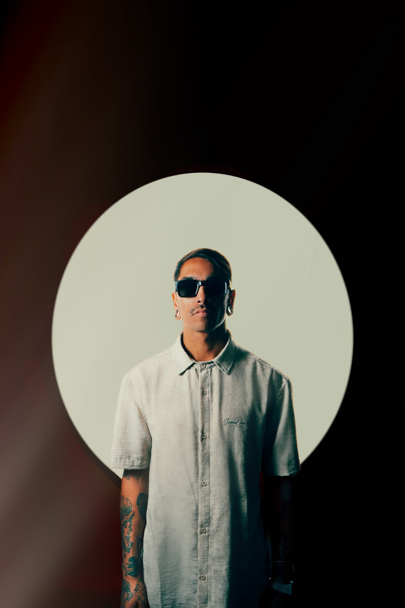
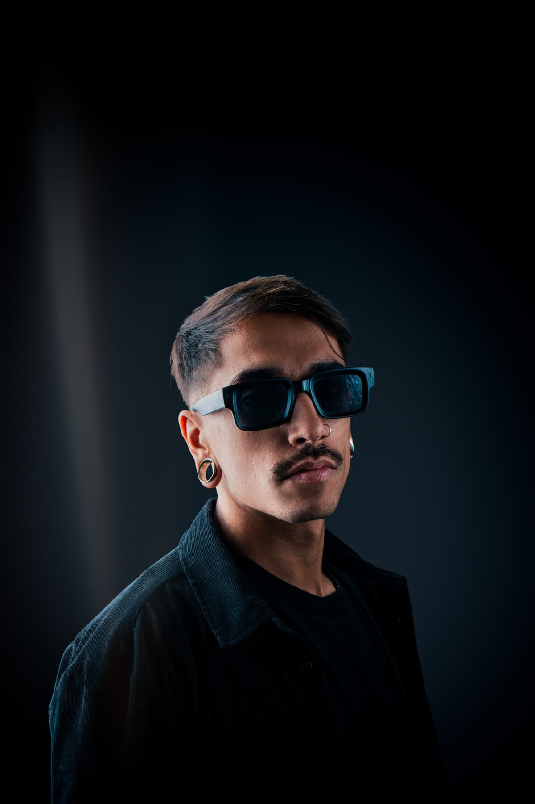
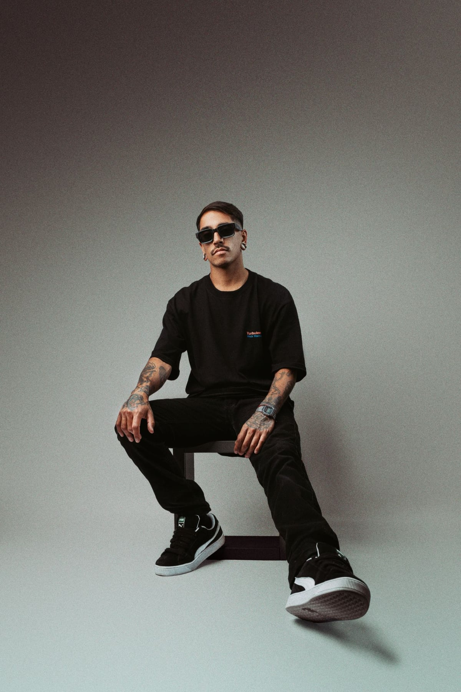
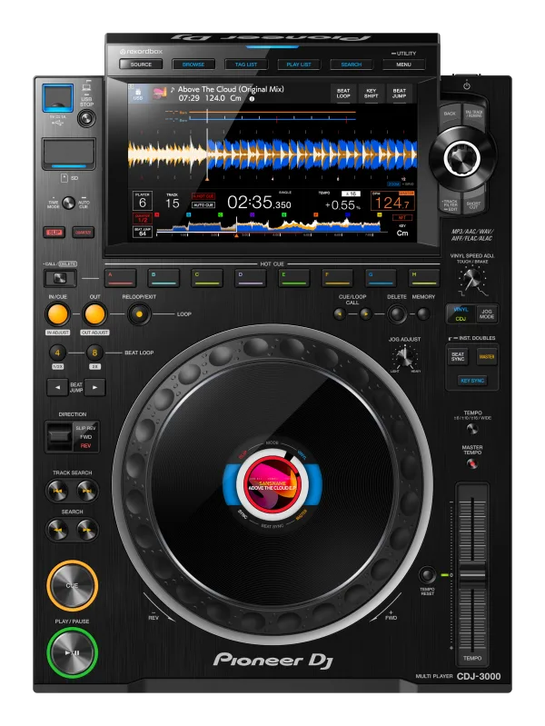
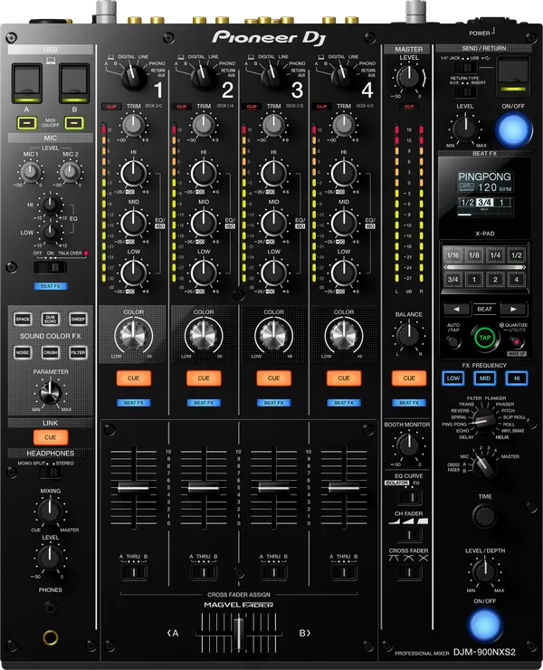
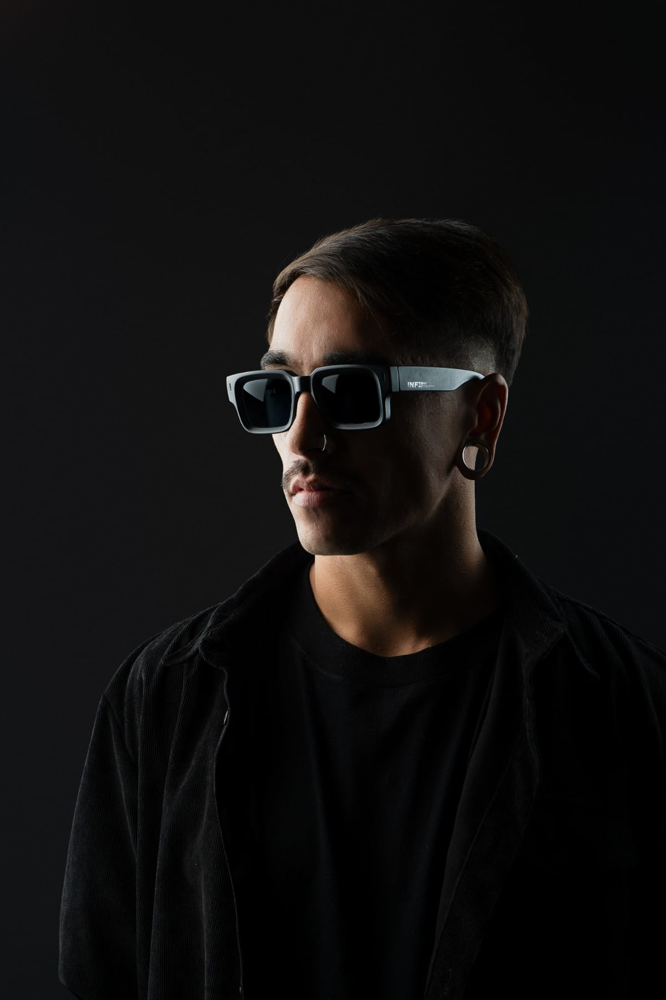

Bajá



Lucas Ramos es un DJ y productor argentino nacido en Necochea, Buenos Aires, Argentina. Su propuesta musical se desarrolla entre el progressive house y el organic house, con un sonido enfocado en la construcción de atmósferas, melodías profundas y una narrativa que busca generar identidad tanto en sus producciones como en sus sets.
Influenciado por artistas como Hernán Cattaneo, Nick Warren, Sasha y John Digweed, comenzó su formación en mezcla y producción en 2020. Desde entonces, ha desarrollado un camino propio dentro de la música electrónica, llevando su propuesta a diferentes escenarios de Argentina y México.
A lo largo de su carrera, ha editado música en sellos como: The Soundgarden, Manual Music, Starlight Music Group, 3rd Avenue, The Purr, Droid 9, entre otros. Sus producciones también han recibido el apoyo de referentes de la escena como Hernán Cattaneo, Nick Warren, Mariano Mellino, Ezequiel Arias y DJ Ruby, entre otros.
En constante evolución, Lucas continúa explorando nuevas sonoridades y consolidando una identidad propia dentro de la escena electrónica. Su enfoque está puesto en crear música con personalidad, profundidad y una conexión genuina con la pista, entendiendo cada producción y cada presentación como parte de un mismo recorrido artístico.
Influencias
Discografía
Su ascendente carrera como productor cuenta con el apoyo de grandes artistas, de la talla de Hernán Cattaneo, Nick Warren, Mariano Mellino, Ezequiel Arias, Nicolás Rada y otros. Su música ha recorrido el mundo sonando en lugares del continente europeo como España, y en América como Argentina, México y Estados Unidos. Destacan los supports de "She" realizados por Nick Warren y Hernán Cattaneo en el open de Cova Santa, Ibiza, y en el show The Soundgarden.
En vivo
Pasá el mouse para abrir el abanico · Click para ver
SoundCloud


Nota: Tanto CDJs como el Mixer deben estar linkeados. El sistema de retorno debe poder ser controlado desde el mixer, realizando previamente el Sound Check por el artista en caso de ser necesario.

Booking & prensa
Original